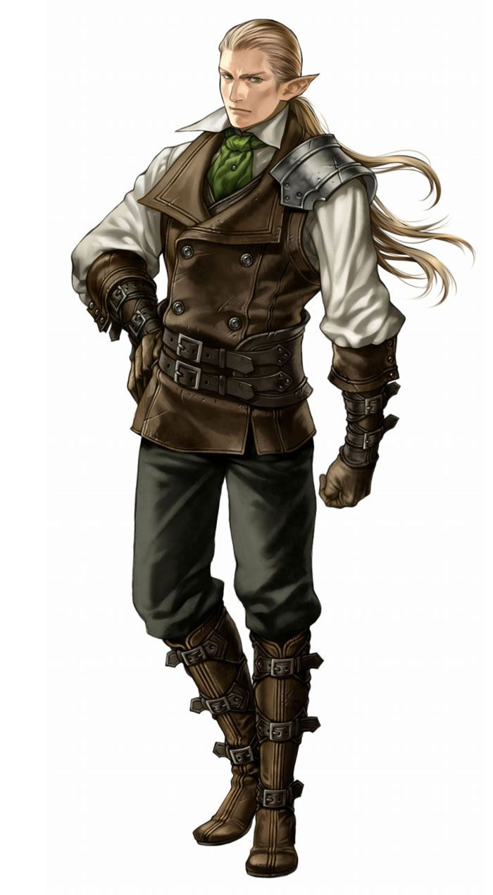
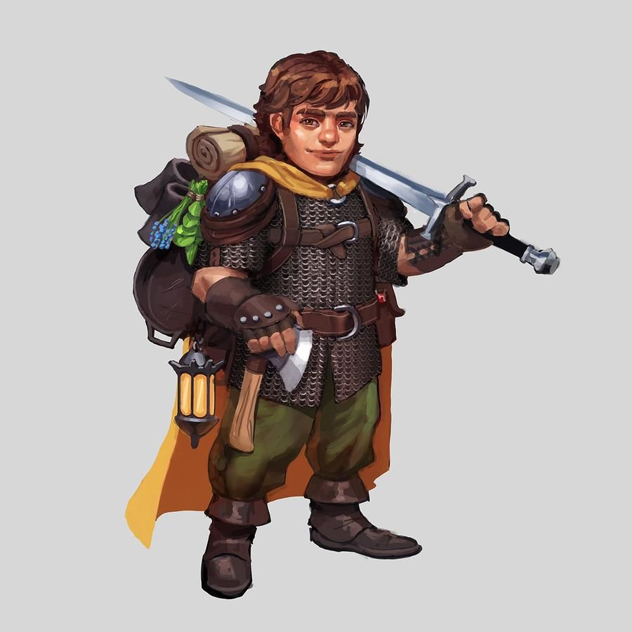

Народы в Pathfinder Adventure
В Pathfinder Adventure существует разнообразие народов, каждый из которых обладает своей уникальной культурой, традициями и особенностями.
Человек (Human)
Физические характеристики людей столь же разнообразны, как и условия их обитания. От смуглых кочевников южных земель до бледных варваров северных морей. Люди отличаются разнообразием цвета кожи, типом сложения и чертами лица. В целом чем ближе люди живут к экватору, тем темнее у них кожа.

Эльф (Elf)
Эльфы обычно выше людей, но обладают более хрупким и изящным сложением и длинными заостренными ушами. У эльфов большие миндалевидные глаза с крупными, ярко окрашенными радужками. Хотя в эльфийских нарядах обычно отражается красота природы, эльфы, живущие в городах, одеваются по последней моде.

Дварф (Dwarf)
Дварфы низкорослы и коренасты. В среднем дварф ниже человека примерно на фут, зато широкоплеч и крепок. И мужчины, и женщины у дварфов гордятся длиной своих волос, мужчины часто заплетают бороды и украшают их заколками и бусинами. Чисто выбритый мужской подбородок у дварфов - явный признак безумия или чего похуже. Те, кто знаком с обычаями этого народа, не доверяют безбородым дварфам!

Гном (Gnome)
Гномы - один из самых низкорослых народов, их рост чуть выше 3 футов. Их волосы обычно очень яркого цвета: оранжевые, как осенние листья; зеленые, как листва весной; темно-красные или пурпурные, как распустившиеся цветы. Варьируется и цвет кожи - от коричнево-земляного до цветочно-розового без особой связи с наследственностью. Гномы сильно отличаются друг от друга чертами лица, у них часто встречаются очень большие глаза или рты, что в одном случае может выглядеть пугающе, а в другом - привлекательно.

Полуэльф (Half-Elf)
Полуэльфы выше людей, но ниже эльфов. Они наследуют стройность и красоту своих эльфийских предков, а человеческая сторона определяет цвет их кожи. Уши полуэльфов более округлые и менее острые, чем у эльфийских предков. Их глаза похожи на человеческие, но радужка бывает самых разных цветов: от янтарного до фиолетового и от изумрудного до темно-синего.

Полурослик (Halfling)
Полурослики вырастают не выше 3 футов. Их широкие загорелые столы сверху покрыты густой курчавой шерстью. Подошва обычно огрубевшая, так как полурослики предпочитают ходить босиком. Их кожа имеет насыщенный миндальный оттенок, а цвет волос чаще всего русый. Уши у них заостренные, но по пропорциям примерно соответствуют человеческим.

Полуорк (Half-orc)
Полуорки обоих полов имеют рост от 6 до 7 футов, мощное телосложение и сероватую или зеленоватую кожу. Их клыки часто вырастают настолько длинными, что торчат изо рта, и это, в сочетании с низким лбом и слегка заостренными ушами, делает внешность полуорка звероподобной. Внешность полуорка может быть впечатляющей, но мало кто назовет их красивыми.